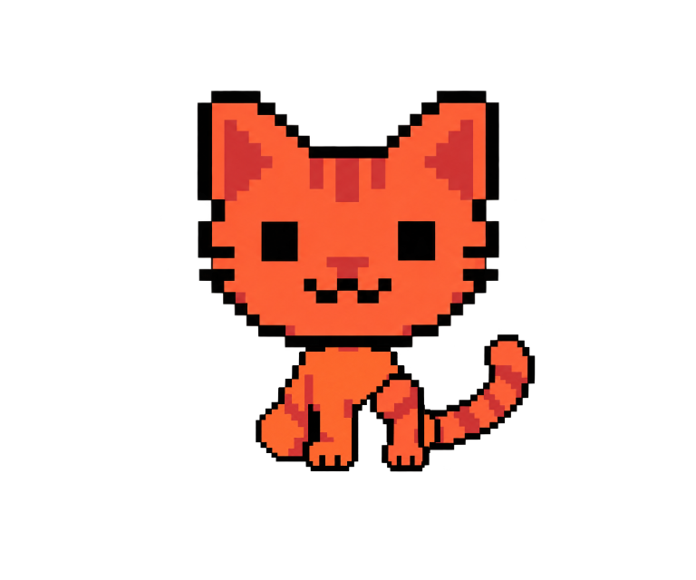

Tu dinero sigue siendo tuyo. GatoPago se ocupa del camino.
Manual visual de propuestas. Un lenguaje de caminos, bloques y decisiones claras. Cercano sin infantilizar; preciso cuando importa.
Laboratorio independiente · Octubre 2026 No reemplaza el brandkit vigente. Las funciones ilustradas no se anuncian como disponibles.
GatoPago01 / Voz
Una tarea. Una frase.
La persona es protagonista. El gato acompaña; no da nombre a funciones. GatoPago se escribe junto, con G y P mayúsculas. “Meli” queda en archivos y capas internas.
Sí / Acción y contexto
Revisa antes de enviar.
Comprueba el importe, el destino y los costes.
No / Tecnología como carga
Revoluciona tus finanzas Web3.
No explica qué debe hacer la persona.
La calidez cambia con el contexto.
Momento
Texto propuesto
Bienvenida
Tus dólares ya saben moverse.
Preparación
Estamos preparando tu pago.
Incertidumbre
Aún no tenemos confirmación. Revisa el estado antes de volver a enviar.
Confirmación real
Pago confirmado. Puedes ver el detalle.
No usar “instantáneo”, “sin costes”, “100 % seguro” ni cifras de rentabilidad sin evidencia y condiciones. USD y USDC no son nombres intercambiables.
GatoPago02 / Símbolo
El logo no actúa.
La cabeza frontal identifica la marca. Las expresiones y poses pertenecen al personaje, no a nuevas versiones del logo.
4 unidades de margen por lado
Regla propuesta: reservar 4 unidades de la retícula del mapa del símbolo. A 120 px de ancho, son 16 px por lado. Usar el SVG específico de 16 px para favicon; no reducir el símbolo detallado sin comprobarlo.
Sí / Proporción intacta
GatoPago
No / Estirar o decorar
GatoPago
Sin deformar, añadir glow ni cambiar colores por campaña.
No recortar orejas, bigotes o cola. No introducir un recuadro negro para simular transparencia. Los fondos pertenecen a la composición, no al archivo transparente.
GatoPago03 / Color
Menos colores. Más intención.
Milk e Ink construyen el espacio. Cat Fire marca la acción. Shadow y Deep acompañan al gato y los desplazamientos, sin inventar una segunda marca.
Milk#FFF8F0
Ink#0B0B0F
Cat Fire#F85239
Cat Shadow#CF3433
Cat Deep#9F292E
Oat#EEE4D8
Sí / Texto Ink sobre Fire
Revisar envío
Contraste comprobable; la acción se distingue también por forma y texto.
No / Texto claro sobre Fire
Revisar envío
No usar para texto pequeño. El color brillante no garantiza contraste.
Semánticos reservados para estados: Growth #71D5A1, Info #79B9FF, Pending #F6C65B, Danger #FF6B7A. Nunca una alerta de riesgo solo por color.
Colores digitales sRGB tomados de la base. Para impresión, pedir una prueba con el perfil del proveedor; este documento no inventa equivalencias Pantone ni CMYK universales.
GatoPago04 / Tipografía
Una fuente. Distintas voces.
Recursive Variable, distribuida localmente con licencia OFL. Las letras siguen editables en el HTML; el símbolo no depende de la fuente.
Tus dólares ya saben moverse.
Títulos
32-64 px en pantallas. Peso 800. MONO 0, CASL 0,5, slnt -8. Interlineado 1-1,12. No comprimir párrafos.
Datos: MONO 1, peso 500, sin inclinación. Botones: 14-16 px, peso 650-700, sin inclinación. Escalar importes con cuidado para que nunca empujen fuera la moneda.
Estas son especificaciones propuestas del laboratorio, no una afirmación de que ya estén aplicadas a la app. La licencia de Recursive no concede derechos sobre el logo o el personaje.
GatoPago05 / Composición
Cuadrados con espacio.
Retícula de 4 px. Espacios habituales 8, 12, 16, 24, 32 y 48. Un borde claro vale más que cinco adornos.
Vista previa · Ejemplo
Enviar 125,00 USDC
A Dani · destino de demostración
Costes y ruta: mostrar los valores reales antes de autorizar.
Revisar envío
Jerarquía
1. Acción principal. 2. Información que permite decidir. 3. Detalle adicional. 4. Ayuda cuando se necesita.
Geometría
Contornos de 1-2 px. Esquinas rectas para acciones. Sombras sólidas de 4 px, no desenfoques. Un pequeño pixel de acento, no confeti permanente.
Márgenes de pantalla de al menos 20-24 px. Componentes sin una versión desktop obligatoria: la referencia principal de la app sigue siendo móvil. En catálogos el espacio extra sirve para comparar, no redefine el producto.
No invadir la zona de lectura con cola, sombras o decoraciones. No usar el logo como patrón repetido detrás de datos financieros.
GatoPago06 / Componentes
La acción se reconoce.
Revisar envío
Volver al detalle
Preparando…
Una acción principal por decisión. Los botones tienen al menos 44 px de alto y separación suficiente. Durante una operación, el texto explica el estado y el botón evita envíos duplicados.
Diálogos
Título concreto, consecuencia y decisión. Seguridad sin bromas. Confirmar operaciones sensibles con importe y destino, no solo “¿Estás seguro?”.
Estados
Carga: skeleton con la estructura real. Error: qué sabemos y qué hacer. Vacío: siguiente acción útil. Éxito: solo después de confirmación real.
El envío aún no está confirmado.
Revisa la actividad antes de intentarlo otra vez.
Estado deshabilitado diferente al loading. Alerta con icono y texto. Las demostraciones no ejecutan pagos ni reemplazan la autorización de la app.
GatoPago07 / Iconografía
Trazos propios. Tareas conocidas.
Cobrar
Enviar
Cambiar
Escanear
Seguridad
Actividad
32 SVG originales, retícula 24 × 24, trazos de 2 unidades, extremos cuadrados y esquinas sin redondear. Color mediante currentColor.
Elegir tamaño
24 px para acciones. 32 px para estados. En 16 px comprobar detalles y fracciones; el QR de la familia es decorativo, no escaneable.
Nombrar la acción
Un icono no sustituye todas las etiquetas. Dar nombre accesible a botones sin texto. No cambiar el símbolo entre pantallas para la misma acción.
Los iconos no imitan logos de activos ni entidades. Para USDC, cadenas o proveedores usar únicamente sus recursos autorizados y distinguirlos del sistema de GatoPago.
Galería: 04-iconos/index.html Buscar, filtrar, alternar fondo y descargar cada SVG. Mantener área táctil de 44 px aunque el dibujo sea más pequeño.
GatoPago08 / Movimiento
Suave no significa constante.
Una sola animación ambiental importante por pantalla. El movimiento explica una acción o acompaña la espera; no compite con importe, destino o advertencias.
Tipo
Duración propuesta
Reproducción
Entrada de tarjeta
280 ms
Una vez
Confirmación
650 ms
Una vez, con evidencia
Ruta indeterminada
2400 ms
Loop, sin porcentaje
Conexión / cambio
2800 / 2600 ms
Loop de demostración
Pulso de espera
1800 ms
Discreto
Preferir transform y opacidad. Evitar cambiar layout en cada frame, filtros grandes y animaciones simultáneas. Animar un trazo no debe redibujar una escena completa.
Movimiento reducido no es una opción decorativa.
Respetar prefers-reduced-motion. Entregar SVG estáticos con el mismo sentido visual. Mantener siempre el texto del estado.
Los SVG de demostración no indican progreso financiero real. Los loops indeterminados no anuncian tiempo de llegada.
GatoPago09 / Personaje
El gato acompaña. La marca permanece.

Travieso, curioso, competente.
Cuerpo pequeño y felino. Sin traje de banquero ni gestos excesivamente humanos. Una cola, anatomía consistente y objetos rastreables.
Reglas de fotogramas: lienzo constante, registro por cabeza o suelo, sin recortes, transparencia real. Orejas y bigotes no cambian de forma al respirar. Una acción tiene principio y final; un loop debe volver sin un salto.
Cuándo aparece
Bienvenida, estados vacíos, preparación y confirmación discreta. No ocupa la zona de lectura ni sustituye el símbolo oficial.
Cuándo se retira
Riesgo serio, pérdida, bloqueo o incertidumbre. El mensaje y la acción de recuperación tienen prioridad.
18 alternativas raster: 1058 pasos PNG. Cabezas, colas y objetos estables. Comprobante solo anima tinta; cuidados incorpora brote, tarjeta, linterna y llave con objetos SVG propios. Pata y oreja rígidas; salto sentado. Comparativas previas: 41 pasos raster y 41 SVG editables. Se revisaron las 20 secuencias originales. Sin aprobación artística ni sustitución del kit. Comparativa: 01-animaciones/coleccion/.
GatoPago10 / Aplicaciones
La identidad sale de la pantalla.
Comprobante · Ejemplo
125,00 USDC
De Dani a una cuenta de demostración
GP-DEMO-1042
Datos ficticios. No acredita una operación.
Una notificación útil
Hay una actualización de tu envío. Abre el detalle para ver su estado.
Correo: contenido claro y un enlace reconocible; sin depender de una animación para entenderlo. Comprobante: activo, importe, destino, estado, fecha, costes e identificador reales. No confundir “enviado” con “confirmado”.
QR imprimible: módulos cuadrados, alto contraste, quiet zone de al menos 4 módulos y sin gato encima del código. Mostrar el destino legible. Probar lectura del archivo y de una impresión antes de usarlo para cobrar.
Social: una idea, una composición y aire. El gato puede aparecer, pero no necesariamente en cada pieza. No ilustrar productos o beneficios pendientes como si estuvieran disponibles.
El punto 06 incluye 7 piezas editables y 22 archivos descargables: correo, comprobante A4, QR A5, notificaciones y tres composiciones sociales. Los PDF y el QR se verificaron digitalmente; falta una prueba de impresión física y de clientes de correo.
GatoPago11 / Revisión
Antes de llamarlo final.
Revisión visual
Logo correcto, proporción y margen intactos.
Tipografía local y jerarquía consistente.
Contraste legible, sin información solo por color.
Gato sin dobles colas, cortes, deformaciones ni objetos que desaparecen.
Movimiento claro, suave y con alternativa estática.
Revisión de producto
Importe, activo, destino y costes explícitos.
Confirmación respaldada por estado real.
Datos de ejemplo etiquetados como ficticios.
QR legible y probado, sin alterar módulos ni quiet zone.
Revisión de entrega
Fuentes editables, licencia y procedencia incluidas.
Archivos y enlaces locales funcionan sin conexión.
Propuestas separadas de los recursos aprobados.
La verificación no se confunde con publicación ni aprobación artística.
Referencias: brandkit/01-manual/identidad-y-voz.md; brandkit/05-colores/tokens.json; mapa del símbolo; Recursive OFL. Snapshot separado en assets/. Este laboratorio no escribe en brandkit/.
 GatoPagoLa idea
GatoPagoLa idea